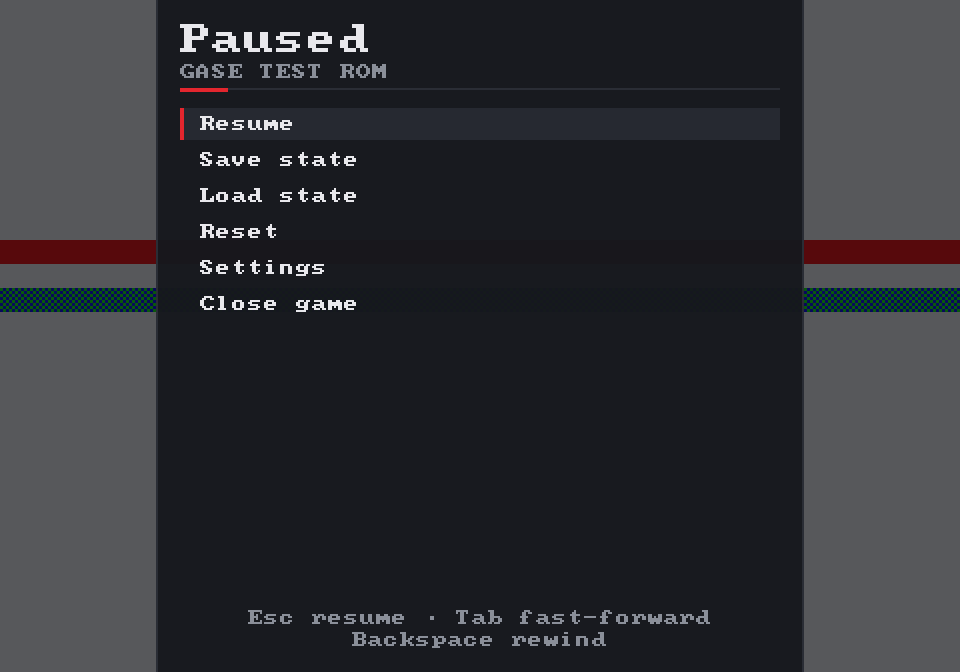
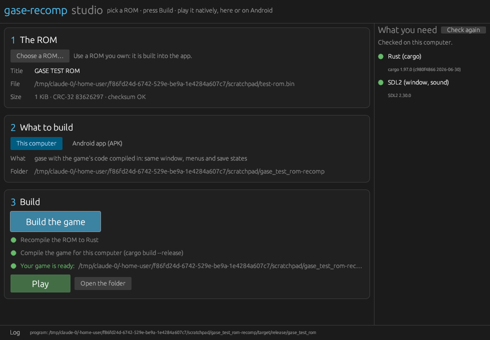

Un recompilateur statique pédagogique · Sega Mega Drive / Genesis
Une ROM.Un jeu natif
gase-recomp lit le code machine Motorola 68000 d’une cartouche que vous possédez et le réécrit, une fois pour toutes, en Rust natif qui tourne sur les puces de l’émulateur gase. Il a d’abord été écrit en C et en Python ; cette page raconte la fabrication des deux, étape par étape, pour que vous puissiez construire le vôtre.
Un émulateur fait semblant d’être une Mega Drive. gase-recomp fait autre chose : il traduit le jeu lui-même en programme — Rust aujourd’hui, C dans son premier jet — une seule fois, avant même de le lancer. Le résultat est un exécutable natif tout ce qu’il y a de plus ordinaire — qu’on peut déboguer, profiler, porter.
L’outil est volontairement compact et abondamment commenté. Il ne cherche ni à être le plus rapide ni le plus compatible : il cherche à être celui qu’on peut lire de bout en bout en un week-end, avant d’en réutiliser les idées pour un autre processeur.
ÉTAPE 01
Apportez votre ROM
Le dump d’une cartouche qui vous appartient : .bin, .md, .gen ou .smd entrelacé. Le chargeur vérifie l’en-tête et la somme de contrôle.
ÉTAPE 02
Choisissez la plateforme
Le jeu généré tourne dans les frontends de gase eux-mêmes : une fenêtre sous Linux, macOS ou Windows, ou sans écran. Les mobiles et le navigateur suivront.
Ordinateur
Sans écran
Android · iOS · Web ensuite
ÉTAPE 03
Recompilez
gase-recomp désassemble, analyse et écrit une crate Rust. cargo run --release construit un gase qui connaît votre jeu.
02
Chapitre 02 · Stratégie
Pourquoi recompiler statiquement ?
Il existe trois façons de faire tourner un vieux logiciel sur une machine moderne. Elles ne diffèrent que sur une question : à quel moment comprend-on le code machine d’origine ?
Émulation
À l’exécution, instruction par instruction
Un interpréteur (ou un JIT) lit, décode et exécute chaque instruction 68000 pendant que le jeu tourne. C’est extrêmement général — code automodifiant compris — mais le travail est refait sans fin, et le programme reste une boîte noire.
Effort
Résultat
Une machine virtuelle
Décompilation
À la main, pendant des années
Des humains réécrivent le jeu en C, fonction après fonction, jusqu’à ce qu’il se recompile en une ROM identique à l’octet près. Le code obtenu est superbe et lisible — au prix de milliers d’heures par jeu.
Effort
Résultat
Un vrai code source
Recomp statique
En amont, par un outil
Un programme traduit mécaniquement le code machine en C ou en Rust, une fois. Le processeur se dissout dans le langage hôte ; le matériel (vidéo, son, minuteries) reste émulé par une bibliothèque d’exécution. Vitesse native et vrai programme — sans rien écrire à la main.
Effort
Résultat
Du code natif, laid mais honnête
La recompilation statique n’a rien de neuf. Des projets comme N64Recomp (Nintendo 64) ou XenonRecomp (Xbox 360), et bien des expériences avant eux, ont montré que l’approche tient la route sur de vrais jeux. gase-recomp applique la même idée à une machine bien plus simple — et c’est précisément ce qui en fait une bonne salle de classe.
Quel que soit le processeur, les difficultés sont toujours les mêmes : savoir où se trouve le code, gérer les sauts imprévisibles, et tenir un temps cohérent avec un matériel qui attend ses interruptions au bon moment. La suite de cette page les attaque une par une.
03
Chapitre 03 · Chargeur
Anatomie d’une ROM Mega Drive
Une cartouche, ce n’est que les octets que le processeur voit à partir de l’adresse $000000. Sachez lire ses 512 premiers octets, et vous saurez où commence n’importe quel jeu.
Le processeur principal de la Mega Drive est un Motorola 68000 cadencé à environ 7,67 MHz : huit registres de données 32 bits d0–d7, huit registres d’adresse a0–a7 (a7 sert de pointeur de pile), un bus d’adresses de 24 bits et — détail qui concerne chaque octet que vous lirez — un stockage gros-boutiste (big-endian) : l’octet de poids fort vient en premier.
La table des vecteurs d’exception
La ROM s’ouvre sur une table d’adresses 32 bits. À la mise sous tension, le 68000 charge son pointeur de pile depuis $000000 et son compteur ordinal depuis $000004. Les interruptions et les traps passent par les autres entrées. Pour un recompilateur, cette table vaut de l’or : c’est la liste des endroits où l’exécution commence à coup sûr.
Table des vecteurs — 64 premiers mots longs
Adresse
Vecteur
Rôle sur Mega Drive
$000
SSP initial
Pointeur de pile superviseur initial, souvent $00FFFE00 ou $01000000 (haut de la RAM)
$004
PC de reset
Point d’entrée du jeu — notre première fonction
$008–$02C
Erreurs
Erreur de bus ou d’adresse, instruction illégale, division par zéro, CHK, TRAPV, privilège, trace, lignes A/F
$070
Niveau 4
Interruption horizontale (HBlank) du VDP — effets raster
$078
Niveau 6
Interruption verticale (VBlank) — le battement de cœur de presque toutes les boucles de jeu
$080–$0BC
TRAP #0–#15
Interruptions logicielles, parfois utilisées comme appels système
L’en-tête Sega en $100
Juste après les vecteurs vient un en-tête ASCII à disposition fixe. Le nom de console doit valoir SEGA MEGA DRIVE ou SEGA GENESIS — le code de démarrage TMSS des consoles plus récentes refuse d’ailleurs les cartouches qui n’affichent pas SEGA à cet endroit.
La somme de contrôle est une simple addition sur 16 bits de tous les mots gros-boutistes, de $200 jusqu’à la fin de la ROM. Ce n’est pas une protection, juste un garde-fou — mais elle vous dit tout de suite si votre dump est intact.
gase/rom.py · premier jetPython
def computed_checksum(self) -> int:
"""Sum of all big-endian words from $200 to the end, modulo 2^16."""
body = self.data[0x200:]
if len(body) % 2:
body += b"\x00"
words = struct.unpack(f">{len(body) // 2}H", body)
return sum(words) & 0xFFFF
Les vieux copieurs (le « Super Magic Drive ») sauvegardaient les ROM dans un format étrange : un en-tête de 512 octets, puis des blocs de 16 Kio dont les 8 premiers Kio contiennent tous les octets impairs et les 8 suivants tous les octets pairs. Le chargeur le détecte et retisse les octets en une image à plat : aucune étape suivante n’aura jamais à s’en soucier.
gase/rom.pyPython
def _deinterleave(raw: bytes) -> bytes:
body = raw[0x200:] # skip the copier header
out = bytearray(len(body))
for block in range(0, len(body), 0x4000):
chunk = body[block:block + 0x4000]
odd, even = chunk[:0x2000], chunk[0x2000:]
out[block + 1:block + 0x4000:2] = odd
out[block + 0:block + 0x4000:2] = even
return bytes(out)
Leçon générale : normalisez les entrées tout au bord du pipeline. Chaque étape suivante suppose une image unique, canonique, à plat et gros-boutiste.
04
Chapitre 04 · Décodeur
Lire du 68000, un mot à la fois
Toute instruction 68000 commence par un mot d’opcode de 16 bits. Ses quatre bits de poids fort — la « ligne » — indiquent la famille ; le reste est une suite de champs compactés.
La ligne 0 regroupe les opérations immédiates et la manipulation de bits, les lignes 1–3 sont des MOVE (octet, long, mot — oui, dans cet ordre), la 4 est un fourre-tout (LEA, JSR, RTS, CLR…), la 6 contient les branchements, la 7 le MOVEQ, les lignes 8/9/B/C/D l’arithmétique et la logique, la E les décalages et rotations. Les lignes A et F ne sont pas attribuées et déclenchent une exception.
À vous : choisissez une instruction et survolez ses champs.
La plupart des instructions désignent leurs opérandes par une adresse effective de 6 bits : 3 bits de mode, 3 bits de registre. Le mode 7 sert d’échappatoire : son champ registre sélectionne les modes « spéciaux ». Certains modes exigent des mots d’extension après l’opcode — d’où des instructions de 2 à 10 octets, et l’impossibilité de décoder un programme 68000 en avançant bêtement de deux octets en deux octets.
Les douze modes d’adressage
Syntaxe
Mode/reg
Signification
Ext.
Dn
000/n
Registre de données
0
An
001/n
Registre d’adresse
0
(An)
010/n
Mémoire pointée par An
0
(An)+
011/n
Mémoire en An, puis An += taille
0
-(An)
100/n
An -= taille, puis mémoire en An
0
d16(An)
101/n
An + déplacement signé 16 bits
1
d8(An,Xn)
110/n
An + registre d’index + déplacement signé 8 bits
1
abs.W
111/000
Adresse absolue 16 bits, étendue en signe
1
abs.L
111/001
Adresse absolue 32 bits
2
d16(PC)
111/010
Relatif au PC
1
d8(PC,Xn)
111/011
Relatif au PC avec index — le mode des tables de sauts
1
#imm
111/100
Valeur immédiate
1–2
Code ou données ?
Voici le piège qui façonne tout le projet. Une ROM est une soupe de code, de graphismes, de musique, de cartes de niveaux et de tables, sans rien qui dise quoi est quoi. Une tuile de pixels se décode sans broncher en instructions absurdes. Un balayage linéaire de $200 à la fin « désassemblerait » des mégaoctets de dessins.
Le décodeur ne choisit donc jamais où regarder. C’est une fonction pure — decode(rom, adresse) → instruction — et la décision de savoir quelles adresses sont du code revient à l’étape suivante.
Une fonction pure se vérifie aussi de façon exhaustive. Le décodeur Rust (crates/recomp/src/m68k) est comparé à celui de gase sur chacun des 65 536 mots d’opcode possibles : même validité, même longueur, mêmes opérandes.
05
Chapitre 05 · Analyse
Trouver le code en le suivant
Faute de pouvoir distinguer le code des données au premier coup d’œil, on les distingue en suivant l’exécution : partir de là où le processeur démarre forcément, et aller partout où il peut aller.
C’est la descente récursive. La liste de travail est amorcée avec le vecteur de reset, les vecteurs d’interruption et ceux des TRAP. Pour chaque entrée, l’analyseur décode les instructions à la suite et, à chaque branchement, ajoute la ou les cibles à la liste. Une fonction, c’est un point d’entrée plus toutes les instructions qu’on atteint depuis lui par des branchements (BRA, Bcc, DBcc, JMP vers une étiquette connue). Un appel — BSR ou JSR — ne prolonge pas la fonction courante : il en découvre une nouvelle.
vecteur → entrée
appel = nouvelle fonction
saut irrésoluble
boucle de rétroaction
Le mur : les sauts indirects
Les jeux adorent les tables de sauts. Une machine à états lit un indice, le multiplie, va chercher une adresse dans une table et exécute jmp (a0). L’analyseur voit bien a0, mais n’a aucune idée de ce qu’il contiendra à l’exécution. Certains motifs se reconnaissent (une table en d8(PC,Xn) juste après le saut, par exemple), mais en général le problème est insoluble statiquement — c’est un cousin du problème de l’arrêt.
gase-recomp ne prétend pas le contraire. Il transforme le problème en méthode de travail, et c’est sans doute l’idée la plus importante de toute cette page :
Recompiler ce qu’on voit.Descente récursive depuis les vecteurs, plus toute liste d’entrées que vous fournissez.
Lancer le jeu.Chaque saut indirect passe par un répartiteur qui cherche la cible dans le code recompilé.
Noter ce qui manque — et continuer à jouer.Une cible inconnue est ajoutée à gase_missing.txt. Le premier jet en C s’arrêtait là ; l’édition Rust laisse l’interpréteur de gase l’exécuter jusqu’à retomber en terrain connu.
Réinjecter.Relancez gase-recomp recomp : il reprend gase_missing.txt tout seul. La couverture grandit à chaque partie, jusqu’à converger.
terminalShell
$ gase-recomp recomp test.bin -o build/game -p headless
[2/4] analysis 4 functions, 64 instructions
$ cd build/game && cargo run --release -- --headless --frames 120
GASE TEST ROM [GM 00000000-00] region Americas, 1 KiB ROM, checksum ok, 68000: "GASE TEST ROM" recompiled by gase-recomp
$ cat gase_missing.txt
0x0002EE
$ cd ../.. && gase-recomp recomp test.bin -o build/game -p headless
[1/4] using addresses discovered at run time: build/game/gase_missing.txt
[2/4] analysis 5 functions, 70 instructions
Une vraie session sur la ROM de test du projet : un jsr (a0) que l’analyse ne savait pas suivre a tourné sur l’interpréteur, a été consigné, et il est devenu la cinquième fonction à la passe suivante. L’analyse statique propose, le programme en marche dispose — tout recompilateur sérieux finit par adopter une variante de cette boucle.
06
Chapitre 06 · Génération
Chaque instruction devient un peu de C
Le générateur de code est presque ennuyeux, et c’est voulu : chaque instruction 68000 est remplacée par un petit bloc de code qui fait exactement ce qu’aurait fait le processeur, puis décompte le bon nombre de cycles.
Ce chapitre lit le premier jet en C, parce que le goto du C épouse les branchements 68000 un pour un. L’édition Rust émet les mêmes blocs — cx.cycles += 8 au lieu de CYC(8), cx.logic(v, 2) au lieu de op_logic(v, 2) — mais traite les branchements autrement, comme le montre le chapitre 10.
D(n) et A(n) désignent les registres émulés, W16 écrit un mot gros-boutiste via le bus mémoire, op_logic positionne N et Z et remet V et C à zéro, exactement comme MOVE, et CYC(8) ajoute le coût de l’instruction à l’horloge. L’adresse d’origine et le désassemblage restent en commentaire : le C produit reste une carte lisible de la ROM.
Le processeur est une struct
L’état de la machine tient dans une simple struct C. Les drapeaux sont stockés dépliés — un octet chacun — parce que tester gase_cpu.z coûte bien moins cher que masquer un registre d’état à chaque branchement ; le vrai SR n’est reconstruit que lorsque le jeu le lit.
runtime/include/gase/gase.hC
typedef struct GaseCpu {
uint32_t d[8]; /* data registers D0-D7 */
uint32_t a[8]; /* address registers (A7 = active stack) */
uint32_t usp, ssp; /* the *inactive* stack pointer */
uint32_t pc; /* next address, between functions */
uint8_t x, n, z, v, c; /* condition codes, one byte each */
uint8_t s, t, imask; /* supervisor, trace, interrupt mask */
bool stopped; /* executing STOP */
int64_t cycles; /* 68000 cycles since power-on */
int64_t next_event; /* when the scheduler must run */
} GaseCpu;
Les drapeaux sont calculés par de minuscules fonctions — op_add, op_sub, op_logic… — déclarées static inline (en Rust, des méthodes #[inline(always)] de Cx). Le compilateur les intègre, et lorsqu’un drapeau est écrasé avant d’avoir été lu, l’optimiseur supprime purement et simplement le calcul inutile. On écrit la chose évidente, le compilateur se charge de la rendre rapide.
runtime/include/gase/m68k_ops.hC
static inline uint32_t op_add(uint32_t d, uint32_t s, int sz) {
uint32_t m = OP_MASK(sz), msb = OP_MSB(sz);
d &= m; s &= m;
uint64_t full = (uint64_t)d + s;
uint32_t r = (uint32_t)full & m;
F.c = F.x = (uint8_t)((full >> OP_BITS(sz)) & 1);
F.v = ((~(d ^ s) & (d ^ r)) & msb) != 0;
F.n = (r & msb) != 0;
F.z = r == 0;
return r;
}
Branchements, appels et retours
Au sein d’une fonction, un branchement devient un goto vers une étiquette nommée d’après son adresse. Un appel — BSR/JSR — empile l’adresse de retour 68000 sur la pile émulée, exactement comme le vrai processeur, puis effectue un vrai appel C. RTS dépile l’adresse dans gase_cpu.pc et rend la main.
void f_000300(void)
{
if (gase_cpu.pc != 0x300u) { /* re-entry by the dispatcher */
switch (gase_cpu.pc) {
case 0x304u: goto L_000304;
default: gase_unresolved(gase_cpu.pc, "bad re-entry"); return;
}
}
L_000300:
CYC(18);
CALL(f_000312, 0x312u, 0x304u); /* push, call, check pc */
L_000304:
CYC(4);
op_logic(D(0) & 0xFFFFu, 2);
CYC(10);
if (COND_EQ) {
POLL(0x300u); /* backward branch: let time pass */
goto L_000300;
}
CYC(16);
gase_cpu.pc = POP32();
return;
}
Pourquoi vérifier gase_cpu.pc après l’appel ? Parce que le code 68000 a le droit de tricher : une routine peut jeter son adresse de retour et en empiler une autre, un jeu peut changer de tâche en échangeant les piles. Si l’adresse qui revient n’est pas celle qu’on attendait, la pile d’appels C ne correspond plus à la pile 68000. La fonction se déroule alors jusqu’à un trampoline de haut niveau, qui cherche la vraie cible dans la table de répartition et y saute. Quand cette cible tombe au milieu d’une fonction — juste après un site d’appel — les points de reprise de la fonction (un petit switch à son entrée) permettent d’y rentrer directement à la bonne étiquette.
Leçon générale : calquez le flot de contrôle de la machine source sur celui de l’hôte chaque fois que c’est sûr, et gardez une issue de secours lente mais correcte pour les autres cas. (En Rust, cette issue de secours est devenue le chemin normal — voir le chapitre 10.)
07
Chapitre 07 · Runtime
Le processeur a disparu. Pas la console.
Le code recompilé écrit toujours en $C00000 en s’attendant à y trouver une puce vidéo. Le runtime joue le rôle de tout ce qui n’est pas le 68000 — une petite bibliothèque C dans le premier jet, les puces de gase elles-mêmes dans l’édition Rust.
$000000ROM de la cartouche — jusqu’à 4 MioLue directement dans un tableau d’octets ; chemin rapide intégré.
$400000Inutilisé / extensions
$A00000Espace d’adressage du Z808 Kio de RAM son et le YM2612, partagés avec le processeur sonore.
$A10000Entrées/sortiesRegistre de version, ports manettes, demande de bus Z80 ($A11100), TMSS ($A14000).
$C00000Ports du VDP et du PSGPort de données, port de contrôle, compteur H/V ; le PSG se trouve en $C00011.
$FF0000RAM de travail — 64 KioMiroir depuis $E00000. Chemin rapide intégré.
Le processeur vidéo
Le VDP dispose de 64 Kio de VRAM qui contiennent des tuiles de 8×8 pixels et les cartes qui les assemblent en deux plans défilants, A et B, plus un plan fenêtre fixe et jusqu’à 80 sprites. Les couleurs vivent en CRAM : quatre palettes de seize couleurs sur 9 bits (c’est pourquoi chaque couleur de cette page est une couleur Mega Drive valide). Les jeux le pilotent par un protocole de commandes en deux mots sur le port de contrôle et copient les données en masse par DMA. Les deux runtimes dessinent une ligne de balayage à la fois, si bien que les astuces en cours d’image — changer le défilement ou la palette depuis une interruption HBlank — continuent de fonctionner.
Côté son, il y a le PSG SN76489 — trois voies en signal carré et une voie de bruit — et la puce FM YM2612, pilotée par le Z80 (le premier jet en C s’arrête au PSG ; gase a les deux). Les manettes se lisent par les ports d’E/S, avec le multiplexage classique par la ligne TH.
Des interruptions dans un monde compilé à l’avance
Voici la partie subtile. Un interpréteur peut vérifier les interruptions entre deux instructions quelconques. Notre code recompilé, lui, déroule du C d’une traite — alors qui l’interrompt ? Réponse : les cycles et les points de contrôle.
VBLANK · LIGNES 224–261
IRQ 6
Compter
Chaque instruction ajoute son coût : CYC(n) en C, cx.cycles += n en Rust. Environ 488 cycles 68000 font une ligne NTSC ; 262 lignes font une image.
Vérifier
À chaque branchement arrière — donc à chaque boucle — le code généré appelle POLL(adr) / cx.poll(adr). Dans le cas courant, c’est une seule comparaison.
Déclencher
Quand une ligne s’est écoulée, l’ordonnanceur fait avancer le VDP d’une ligne. À la ligne 224, il lève l’interruption VBlank de niveau 6 : empiler PC et SR, appeler la routine désignée par le vecteur en $78, reprendre en tête de boucle au RTE.
Comme chaque boucle effectue ce contrôle et que le code linéaire est court, une interruption n’a jamais plus de quelques dizaines de cycles de retard — bien moins qu’une ligne. C’est l’astuce qui permet à un programme compilé à l’avance de se comporter comme s’il vivait dans une console.
Feuille de route, en toute franchise — édition Rust
Recompilateur 68000 sur les puces de gaseVDP, YM2612 + PSG, Z80, manettes 6 boutons, mappers de cartouche : tout vient de gase, tout est branché. La ROM de test tourne de bout en bout.fonctionne
Repli sur un interpréteurLe code que l’analyse a manqué, ou copié en RAM, tourne sur l’interpréteur 68000 de gase au lieu d’arrêter le jeu.fonctionne
Dans les frontends de gaseOrdinateur (Linux, macOS, Windows) et sans écran : le programme généré, c’est gase, avec un processeur de plus, enregistré pour votre ROM.fonctionne
Sauvegardes, états, rembobinageLa SRAM / EEPROM de la cartouche, les états de sauvegarde avec aperçu et le rembobinage sont ceux de gase, et marchent tels quels sur le jeu recompilé.fonctionne
Android, iOS, WebIls font déjà tourner la même coquille de gase ; leurs points d’entrée doivent laisser un jeu enregistrer son code avant le démarrage de la coquille — un petit chantier côté gase.ensuite
08
Chapitre 08 · Coquilles
Un jeu, plusieurs coquilles
Un jeu recompilé ne devrait pas se soucier de l’endroit où il tourne. Tout ce qui dépend de la plateforme vit dans une fine coquille : une fenêtre, une texture, un callback audio, les entrées.
Dans l’édition Rust, la coquille n’est même plus la nôtre : c’est celle de gase. Le programme généré enregistre son code recompilé, puis lance gase, dont les frontends appellent Genesis::run_frame() une fois par image et récupèrent l’image et le son — exactement l’appel qu’ils font pour l’interpréteur. Le chapitre 10 raconte comment. Voici où en sont les choses, honnêtement :
Ordinateur
coquille SDL de gase · aujourd’hui
Linux, macOS et Windows. cargo run --release ouvre la fenêtre de gase : menus, états de sauvegarde avec aperçu, rembobinage, manettes, réglages. --headless enchaîne les images sans fenêtre et peut enregistrer une capture — bien pratique en CI.
Android · iOS
gase-mobile · ensuite
Les applications de gase, commandes tactiles comprises, font déjà tourner cette même coquille. Ce qui manque est modeste : dans gase-mobile, SDL_main doit laisser une crate de jeu enregistrer son code avant le démarrage de la coquille. (Les modèles Gradle et Xcode du premier jet en C n’ont jamais été compilés sur un vrai appareil.)
Web
gase-web · ensuite
Un runtime sans une ligne d’unsafe, sur des puces que gase fait déjà tourner dans le navigateur : WebAssembly s’impose naturellement. Même petit chantier : les exports wasm de gase-web doivent laisser une crate de jeu s’enregistrer d’abord.
terminalShell
$ cargo install --path crates/recomp # the gase-recomp CLI
$ gase-recomp info game.md
$ gase-recomp disasm game.md | less
$ gase-recomp recomp game.md -o build/game
$ cd build/game && cargo run --release # gase's window, menus, save states
$ cargo run --release -- --headless --frames 600 --screenshot shot.png
info affiche l’en-tête, les vecteurs et l’état de la somme de contrôle ; disasm montre ce que l’analyse a trouvé ; recomp écrit une crate Cargo : src/main.rs enregistre le code et lance gase, le code généré vit dans src/recomp/, et rom.bin s’ouvre au démarrage. --platform headless se passe de SDL2. Toutes les options de gase s’appliquent (--help). L’équivalent du premier jet est toujours là : python -m gase recomp … --platform desktop|android|ios.
09
Chapitre 09 · Vérification
La confiance n’exclut pas le diff
Un recompilateur se trompe en silence : un seul drapeau mal calculé, et le jeu prend le mauvais branchement dix minutes plus tard. Impossible de déboguer ça manette en main. Il faut un arbitre.
Pour le premier jet en C, cet arbitre, c’est Musashi, un émulateur 68000 en C, mûr et largement utilisé. La technique s’appelle le test différentiel : on génère des suites d’instructions aléatoires mais valides, on les fait exécuter par Musashi et par le C recompilé à partir du même état initial, puis on compare absolument tout. (L’édition Rust a changé d’arbitre pour un plus exigeant — qui a trouvé des bugs que celui-ci avait laissés passer. Voir le chapitre 10.)
Générer
Opcodes, opérandes et tailles aléatoires, registres aléatoires, quelques octets de RAM au hasard. Le tout à partir d’une graine : chaque échec est reproductible.
Référence
Musashi interprète la séquence.
Sous test
gase-recomp la recompile en C, qui est compilé puis exécuté.
Comparer
d0–d7, a0–a7, X N Z V C, SR, mémoire touchée, nombre de cycles. Au moindre écart, la graine et l’instruction fautive s’affichent.
tests/difftest/difftest.pyPython
rng = random.Random(seed)
low, ram, entries = build_image(rng, ncases, length) # random valid code
states = make_states(rng, entries) # regs, flags, SR
expected = run_musashi(low, ram, states) # the reference
exe = build_harness(low, entries, work) # recompile + cc
got = run_harness(exe, states) # the code under test
for exp, mine in zip(expected, got):
assert exp == mine # regs, SR, RAM CRC
Les tests aléatoires trouvent les bugs qu’on n’avait pas imaginés. Pour ceux qu’on avait imaginés, il y a une petite ROM de test assemblée à la main : une vraie image de cartouche, écrite de zéro pour le projet, qui sollicite les vecteurs, le VDP, les interruptions et les tables de sauts — et qu’on a le droit de distribuer. Tout tourne sur GitHub Actions à chaque pull request : tests unitaires, suite différentielle, et recompilation complète de la ROM de test. L’édition Rust a la même paire : crates/difftest et crates/e2e.
Leçon générale : s’il existe une implémentation de référence éprouvée pour votre processeur, votre premier banc de test doit être un diff contre elle.
10
Chapitre 10 · Deuxième édition
Le virage Rust
La version C fonctionnait, et elle a beaucoup appris à son auteur. Puis le projet a changé de langage — pas par effet de mode, mais parce qu’une Mega Drive complète, à une puce près, l’attendait déjà en Rust.
Cette console, c’est gase, l’émulateur Mega Drive du même auteur : pédagogique comme ce projet, une crate par puce, #![forbid(unsafe_code)], des cœurs de processeur validés sur environ 2,6 millions de vecteurs de test matériels, et des frontends pour ordinateur, Android, iOS et le Web. Un recompilateur remplace le 68000, et rien d’autre. L’édition Rust — l’espace de travail crates/ — recompile donc le 68000 et emprunte tout le reste à gase.
Réutiliser toutes les puces sauf une
Réécrire pour un recompilateur un VDP avec la temporisation de sa FIFO et de son DMA, un YM2612, un Z80 et les mappers de cartouche, c’était écrire un deuxième émulateur, en moins bien. Or la structure Hardware de gase — toute sa carte mémoire — implémente déjà le trait Bus du 68000, celui auquel parle son interpréteur. Le code recompilé se branche sur ce même bus. Au départ, gase n’a eu besoin d’aucune modification : c’est une dépendance git, figée sur un commit. Plus tard, il a gagné un seul module, pour accueillir les jeux recompilés dans ses propres frontends — la fin de ce chapitre raconte cette histoire.
Qui fait quoi, d’une édition à l’autre
Pièce
Premier jet en C
Édition Rust
68000
Recompilé en C
Recompilé en Rust — la seule puce qu’on écrit
VDP
Rendu par ligne écrit pour le projet
gase-vdp, avec la temporisation FIFO et DMA
Son
PSG ; FM en cours
gase-sound : FM YM2612 + PSG
Z80
Pas encore exécuté (sa RAM seulement)
gase-z80, sur sa propre horloge
Cartouche
ROM seule
gase-core : sauvegardes SRAM / EEPROM, mappers
Manettes
3 boutons
Manettes 6 boutons
Code inconnu
Arrêt, il faut recompiler
L’interpréteur de gase-m68k prend le relais
Frontends
Coquille SDL2 écrite pour le projet
Ceux de gase : menus, états, rembobinage
Cargo.tomlTOML
# The emulator we build on: every chip but the 68000 is reused as-is, and its
# frontends run recompiled games. Keep this revision in sync with GASE_REV in
# crates/recomp/src/project.rs (a test checks it).
gase-core = { git = "https://github.com/bthuner/gase", rev = "bf711e56b1fbc2c97fac257bf62c95fd760ef9d0" }
gase-m68k = { git = "https://github.com/bthuner/gase", rev = "bf711e56b1fbc2c97fac257bf62c95fd760ef9d0" }
Leçon générale : avant d’écrire un runtime, cherchez un émulateur dont vous pouvez emprunter le bus. Le processeur est la seule pièce qu’un recompilateur remplace vraiment.
Pas de goto ? Alors une machine à états
Le premier jet transformait chaque branchement en goto. Rust n’en a pas. Chaque fonction 68000 devient donc une boucle loop autour d’un match sur l’adresse du prochain bloc — une suite d’instructions sans étiquette au milieu. Un branchement s’écrit pc = CIBLE; continue, que LLVM retraduit en un simple saut direct. Toute adresse qui n’est pas l’un des blocs de la fonction tombe dans le bras _ et retourne au répartiteur. Voici la boucle principale de la ROM de test, qui attend le VBlank, telle que gase-recomp recomp l’écrit :
pub fn f_000200(cx: &mut Cx) {
let mut pc = cx.pc;
loop {
match pc {
// ...
0x27E => {
// 00027E 4A39 00FF 0000 tst.b ($ff0000).l
cx.cycles += 18;
let ea_d = 0xFF0000;
let v = cx.r8(ea_d);
cx.logic(v, 1);
// 000284 67F8 beq $27e
cx.cycles += 10;
if cx.cond(7 /* eq */) { if !cx.poll(0x27E) { return; } pc = 0x27E; continue; }
// 000286 4239 00FF 0000 clr.b ($ff0000).l
// ...
}
_ => { cx.pc = pc; return; }
}
}
}
La pile native n’est qu’un cache
Un effet de bord s’est révélé être la meilleure idée de la réécriture. Puisqu’une fonction commence par match pc, on peut y entrer par n’importe lequel de ses blocs, pas seulement par le haut. Le premier jet en C avait besoin de points de reprise et d’un trampoline pour ce cas rare ; ici, c’est le cas normal. La pile d’appels native de Rust n’a donc pas à refléter celle du 68000 : ce n’est qu’un cache de la pile émulée, qui vit en RAM de travail, comme sur la vraie console.
Et un cache, ça se jette. Quand un point de contrôle constate que l’image est terminée, le runtime lève un drapeau unwinding : chaque fonction rend la main, jusqu’à run_frame, en laissant cx.pc sur le bloc où reprendre. L’image suivante relance simplement le répartiteur sur cx.pc. Le jeu devient exécutable image par image — run_frame joue exactement une image puis rend la main, ce qui est précisément ce qu’attend tout frontend (fenêtre SDL, téléphone, navigateur). Retenez-le : c’est ce qui permettra plus tard au jeu d’emménager dans les frontends de gase.
cadre Rust natif
rendu pendant le déroulement
là où en est l’exécution
pile 68000 émulée
crates/runtime/src/cpu.rsRust
/// Run until the end of the current frame.
pub fn run_frame(&mut self) {
self.unwinding = false;
while !self.unwinding {
self.dispatch();
}
self.unwinding = false;
}
call empile la vraie adresse de retour 68000, puis fait un appel natif ; returned vérifie que le jeu est revenu là où on l’attendait — et répond « rends la main toi aussi » pendant le déroulement.
Le code oublié par l’analyse continue de tourner
Dans le premier jet en C, atteindre du code non recompilé arrêtait le jeu : l’adresse partait dans gase_missing.txt, et il fallait recompiler avant d’aller plus loin. Le runtime Rust a une meilleure réponse sous la main : l’interpréteur 68000 de gase lui-même, sur le même bus. dispatch exécute le code recompilé s’il existe ; sinon, il confie l’état du processeur à l’interpréteur, qui avance pas à pas jusqu’à retomber sur un bloc recompilé. L’adresse est toujours consignée, et le prochain gase-recomp recomp en fait une fonction — la boucle de couverture du chapitre 05, sans le plantage.
crates/runtime/src/cpu.rs · interpret()Rust
loop {
self.cpu.set_interrupt_level(self.m.irq_level());
self.m.set_clock(self.cycles);
self.cycles += u64::from(self.cpu.step(&mut DynBus(&mut *self.m)));
// ... catch up at the next event, unwind at the end of the frame ...
if (self.code.is_block)(self.cpu.pc() & 0xFF_FFFF) {
break;
}
}
L’ordonnanceur, mis à l’envers
Le run_frame de gase pilote son 68000 instruction par instruction et traite les événements de ligne entre deux. Un recompilateur ne peut pas fonctionner ainsi : le code s’exécute d’une traite. On inverse donc les rôles. À chaque point de contrôle (chaque branchement arrière) et avant chaque accès d’E/S, le code recompilé indique à la machine combien de cycles il a consommés, et la machine rattrape son retard : elle fait avancer jusqu’à cet instant la machine à états des lignes, le Z80 et l’audio. Le temps se compte en tops d’horloge maître — le 68000 tourne à maître / 7, le Z80 à maître / 15, une ligne dure 3420 tops, le HBlank commence au top 2650 et, sur la première ligne de blanking, le VBlank se déclenche au top 770.
code recompilé, d’une traite
contrôle → catch_up(cycles)
accès d’E/S : rattrapage d’abord
événement de ligne (tops maître)
Une ligne de balayage, en tops d’horloge maître. *Le VBlank ne se déclenche que sur la première ligne de blanking ; le HBlank, à chaque ligne.
gase · crates/core/src/system/external.rsRust
/// Run every other chip up to `cycles` (scanlines, Z80, sound) and
/// return the cycle at which the console next needs attention.
pub fn catch_up(&mut self, cycles: u64) -> u64 {
self.set_clock(cycles);
self.run_to(self.clock);
self.next_event().div_ceil(7)
}
Cycles processeur × 7 = tops maître. La valeur renvoyée est la prochaine échéance : tant que rien n’est dû, cx.poll reste une simple comparaison. gase-recomp a d’abord écrit lui-même cet ordonnanceur inversé, sous le nom de GenesisMachine ; il vit désormais dans gase, sous le nom d’External — voir plus bas.
Un meilleur arbitre
Le premier jet était comparé à Musashi. L’édition Rust est comparée à l’interpréteur de gase — celui qui est validé sur des vecteurs de test matériels. Même méthode qu’au chapitre 09, référence plus exigeante :
Générer
Des milliers de fragments 68000 aléatoires mais valides, et des états de registres, de drapeaux et de RAM tirés au hasard, à partir d’une graine.
Référence
gase-m68k interprète chacun d’eux.
Sous test
gase-recomp les traduit en Rust, compilé avec les tests.
Comparer
Registres, drapeaux, cadres d’exception et toute la RAM. Sur environ 13 000 fragments : identité parfaite.
Le décodeur a droit à sa propre vérification : il est d’accord avec celui de gase sur les 65 536 mots d’opcode possibles. Et le nouvel arbitre a fait ce qu’on attend d’un arbitre — il a sifflé des erreurs que les tests fondés sur Musashi avaient tranquillement « validées » :
Ce que la meilleure référence a attrapé
Cas
Ce que fait un vrai 68000
Bcc.s $FF
Un octet de branchement court valant $FF est simplement un déplacement de −1. « Un déplacement 32 bits suit », c’est la lecture du 68020 — et les décodeurs Python et Rust l’avaient recopiée tous les deux.
ABCD SBCD NBCD
La correction décimale de la puce pour les chiffres invalides (A–F) et son drapeau V « indéfini » diffèrent de ceux de Musashi — jusqu’à l’octet de résultat.
DIVU DIVS #0
Avant de déclencher l’exception, une division par zéro remet N, Z, V et C à zéro.
CHK
N reflète toujours la valeur du registre, que le contrôle échoue ou non.
LEA abs
Une adresse absolue garde ses 32 bits dans An ; seul le bus d’adresses fait 24 bits.
crates/runtime/src/ops.rsRust
pub fn abcd(&mut self, d: u32, s: u32) -> u32 {
let (d, s) = (d & 0xFF, s & 0xFF);
let binary = d + s + u32::from(self.x);
let carries = ((s & d) | (!binary & s) | (!binary & d)) & 0x88;
let too_big = (((binary + 0x66) ^ binary) & 0x110) >> 1;
let correction = (carries | too_big) - ((carries | too_big) >> 2);
let result = binary + correction;
self.set_bcd_flags((
result & 0xFF,
(carries | (binary & !result)) & 0x80 != 0,
!binary & result & 0x80 != 0,
))
}
Leçon générale : vos tests ne valent que ce que vaut votre référence. Deux implémentations d’accord ne prouvent rien si elles partagent la même erreur.
Le prix à payer : le temps de compilation
Pour la recompilation statique, Rust comporte un vrai risque : rustc face à d’énormes fonctions générées. Pour le mesurer avant de parier dessus, un programme d’exemple fabrique une ROM synthétique remplie de code aléatoire valide, de la taille d’un gros jeu Mega Drive :
157 000instructions 68000
985 000lignes de Rust
41 Mode source généré
0,8 sde génération
10 minbuild release, processeur 4 cœurs
Générer est instantané ; c’est la compilation qui présente l’addition — une dizaine de minutes sur une modeste machine à 4 cœurs pour ce code aléatoire volontairement lourd (un vrai jeu de 2,2 Mo prendra ensuite environ cinq minutes, voir plus bas), payée une fois par jeu et non à chaque image. Le plus instructif a été de mesurer où part ce temps : le front-end de rustc (vérification des types et des emprunts) prend quelques secondes ; LLVM prend le reste, et son coût croît plus vite que le code. Ce sont les longues fonctions pleines de lectures et d’écritures mémoire qui coûtent : les mêmes 30 000 instructions compilent en 146 s sous forme de longues routines et en 50 s sous forme de courtes, alors que le niveau d’optimisation ne change presque rien (135 s en opt-level = 1). Le générateur façonne donc sa sortie pour le compilateur :
Beaucoup de petits fichiersLes fonctions sont réparties dans des modules part_NNN.rs : rustc ne voit jamais un fichier géant.en place
Builds de dev rapides, dépendances optimiséesopt-level = 1 pour le code du jeu, opt-level = 3 pour les puces de gase : on peut tester en jouant sans build release complet.en place
Génération de code en parallèlecodegen-units = 16 en release laisse LLVM travailler sur plusieurs morceaux à la fois.en place
Blocs courts, fonctions découpéesLes suites d’instructions sans saut sont coupées toutes les 24 instructions, et les grosses routines 68000 deviennent plusieurs fonctions #[inline(never)] d’environ 48 instructions, qui rendent le pc suivant à un petit match (146 s → 107 s sur le test de 30 000 instructions). --chunk et --max-block permettent d’expérimenter.en place
Inlining sobreSeuls les calculs de flags fréquents sont inlinés ; un accès mémoire est un appel à la console (dont le chemin rapide en RAM de travail est inliné côté gase), et le BCD, les divisions et les rotations via X restent hors ligne, pour que chaque instruction produise peu d’IR.en place
Jusque-là, l’édition Rust traînait sa propre petite coquille : une fenêtre SDL et un lanceur sans écran, dans la crate du runtime. Ils fonctionnaient — sans menus, sans manettes, sans états de sauvegarde. gase avait déjà tout cela, sur toutes ses plateformes. Le réécrire, c’était refaire l’erreur du VDP. Le jeu recompilé a donc emménagé chez gase.
L’ordonnanceur inversé — celui que gase-recomp s’était écrit, sous le nom de GenesisMachine — est parti dans gase, là où il a sa place, sous la forme d’un mode processeur externe : gase_core::system::external. Tout son contrat tient en un trait, et External est la console telle qu’un 68000 externe la voit pendant une image : le même Bus que celui de l’interpréteur, plus set_clock, catch_up et frame_done. Côté gase, le chemin externe de Genesis::run_frame tient en vingt-cinq lignes environ :
gase · crates/core/src/system/external.rsRust
/// A replacement for the 68000 interpreter.
pub trait ExternalCpu: fmt::Debug + Send {
/// `cpu` holds the CPU state: load it first,
/// store it back before returning. It is also
/// an interpreter, for code you cannot run.
fn run_frame(&mut self, cpu: &mut M68k,
console: &mut External<'_>);
/// A copy (consoles are cloned for save
/// states and rewind).
fn clone_box(&self) -> Box<dyn ExternalCpu>;
// ... describe(), for gase's game line ...
}
gase · crates/core/src/system.rsRust
fn run_external_frame(&mut self) {
let mut cpu = self.external.take().expect("an external CPU");
let frame_start = self.next_line;
let mut console = external::External::new(
&mut self.hw,
&mut self.z80,
&mut self.z80_clock,
self.m68k_clock.max(frame_start),
frame_start,
);
cpu.run_frame(&mut self.m68k, &mut console);
// An external CPU must return at the end of the frame; if it came
// back early, the console finishes the frame with the 68000 idle.
console.finish_frame();
// ... clocks, audio, frame count: as after a normal frame ...
}
Entre deux images, le processeur appartient à gase
Voici ce qui rend l’intégration propre. À chaque image, le processeur recompilé charge ses registres depuis le M68k de gase — l’état même de l’interpréteur —, s’exécute, puis les y range. Entre deux images, le 68000 est celui de gase, exactement comme si l’interpréteur avait tourné. Tout ce que gase a construit autour de cette structure continue donc de marcher sans rien savoir du changement : les états de sauvegarde, le rembobinage, les vues de registres du débogueur. Et ce même M68k sert d’interpréteur de repli pour le code que l’analyse a manqué.
Cela ne marche que grâce à l’idée du cache, plus haut. Un recompilateur dont la pile native reflétait celle du 68000 ne pourrait jamais passer la main : une partie de son état serait faite d’adresses de retour enfouies dans des cadres Rust. Le nôtre se déroule à chaque fin d’image : quand run_frame rend la main, il ne reste rien nulle part, sauf dans les registres et en RAM — exactement ce que gase sait déjà sauvegarder.
/// Start a frame: load the CPU state from `cpu`.
pub fn new(cpu: &'a mut M68k, m: &'a mut dyn Machine, code: Code) -> Self {
let cycles = m.cycles();
let next_event = m.catch_up(cycles);
let mut cx = Self { d: cpu.d, a: cpu.a, /* ... */ m, cpu, code, /* ... */ };
cx.load_registers();
cx
}
/// End the frame: store the CPU state back into the interpreter.
pub fn finish(mut self) -> BTreeSet<u32> {
self.store_registers();
let pc = self.pc;
self.cpu.set_pc(&mut DynBus(&mut *self.m), pc);
self.missing
}
code de gase
code de gase-recomp
poll ⇄ catch_up · état partagé
non recompilé : interprété
La crate du runtime en est sortie allégée d’environ 600 lignes : son propre ordonnanceur, son enveloppe de jeu et ses deux frontends ont disparu. Cx<'a> se contente désormais d’emprunter la console sous la forme d’un &mut dyn Machine, le temps d’une image. Pas de générique dans le code généré : chaque accès mémoire passe par un appel indirect, négligeable à 7,67 MHz — et chaque fonction générée reste plus petite pour LLVM, dont nous venons de lire l’addition.
Un registre, indexé par somme de contrôle
Comment gase sait-il quelle ROM est recompilée ? Le programme généré appelle gase_recomp_runtime::register(ROM_CRC32, recomp::cpu) dès le début de main, puis passe la main à gase::run_command_line(args) — tout le main de gase, déplacé dans sa bibliothèque pour l’occasion. Dès lors, toute console que gase crée pour cette ROM, reconnue à son CRC-32, exécute le code recompilé ; toute autre ROM tourne sur l’interpréteur, comme d’habitude. Voici le main.rs qu’écrit gase-recomp, moins une petite fonction qui cherche rom.bin :
src/main.rs · généréRust
mod recomp;
fn main() -> ExitCode {
gase_recomp_runtime::register(recomp::ROM_CRC32, recomp::cpu);
let mut args: Vec<String> = std::env::args().skip(1).collect();
// No ROM on the command line: open the one shipped next to the game.
if !args.iter().any(|a| Path::new(a).is_file()) {
if let Some(rom) = default_rom() {
args.push(rom.to_string_lossy().into_owned());
}
}
gase::run_command_line(args)
}
Le binaire du jeu généré est donc gase — fenêtre, menus, états de sauvegarde avec aperçu, rembobinage, manettes, commandes tactiles, réglages —, avec un processeur de plus. Ouvrez une autre cartouche depuis son menu : elle tourne tout simplement sur l’interpréteur.
Cargo.toml généréTOML
[dependencies]
gase-recomp-runtime = { git = "https://github.com/bthuner/gase-recomp", branch = "develop" }
# gase's frontends, at the revision the runtime uses (one gase-core).
gase = { git = "https://github.com/bthuner/gase", rev = "bf711e56b1fbc2c97fac257bf62c95fd760ef9d0", default-features = false }
[features]
default = ["window"]
# gase's window, sound and gamepads (needs the SDL2 development package).
window = ["gase/sdl"]
Tester un ordonnanceur inversé
Déplacer l’ordonnanceur dans gase posait une question évidente : External est-il vraiment la même console que Genesis::run_frame, simplement retournée ? gase y répond avec le processeur auquel il se fie le plus — son propre interpréteur. Son test fait tourner l’interpréteur à traversExternal, au moyen d’un ExternalCpu de dix lignes qui avance d’une instruction à la fois, et vérifie que la RAM de travail, la RAM du Z80, l’image et les registres sont identiques à ceux de l’ordonnanceur normal : avec les interruptions, avec le Z80 qui tourne à côté, et avec un DMA 68000→VDP qui doit geler le processeur exactement aussi longtemps. Les états de sauvegarde font l’aller-retour, et le registre choisit bien les consoles par somme de contrôle.
Leçon générale : pour tester un ordonnanceur inversé, faites-y tourner un processeur dont vous êtes sûr. Toute différence est alors la faute de l’ordonnanceur, jamais celle du processeur.
La preuve, à l’écran
Sur la ROM de test du projet, le frontend sans écran de gase présente désormais le jeu avec ses propres mots — et le fait tourner à environ 1 800 images par seconde. Un test de bout en bout (crates/e2e) vérifie qu’après 60 images le jeu recompilé affiche la même image et contient la même RAM que sous l’interpréteur de gase, et que les états de sauvegarde font l’aller-retour.
terminal · build/gameShell
$ cargo run --release -- --headless --frames 600 --screenshot shot.png
GASE TEST ROM [GM 00000000-00] region Americas, 1 KiB ROM, checksum ok, 68000: "GASE TEST ROM" recompiled by gase-recomp
Saved shot.png
$ cargo run --release -- --headless --bench
600 frames in 321.25ms: 1867.7 fps (31.2x real time)
gase · menu de pause · jeu recompilé960 × 672

Une vraie capture d’écran : le menu de pause de gase par-dessus la ROM de test recompilée. États de sauvegarde, rembobinage et avance rapide sont ceux de gase — le binaire du jeu n’a jamais eu à les implémenter.
Premier vrai jeu : hashbug
La ROM de test prouve la mécanique ; un vrai jeu prouve l’intérêt. Le premier fut hashbug, un homebrew Mega Drive de 2,2 Mo, recompilé par l’auteur sur sa propre machine :
2,2 MoROM homebrew
1 passede gase-recomp recomp
≈ 5 minde build release
= gasegraphismes identiques à l’émulateur
Une seule recompilation a suffi pour y jouer, et l’image était la même que celle de la ROM exécutée par l’interpréteur de gase. Le build release a pris cinq bonnes minutes : deux fois moins que les dix minutes du test synthétique plus haut, ce qui n’a rien d’étonnant : le vrai code est surtout fait de déplacements, de comparaisons et de branchements, bien plus léger que des instructions aléatoires pleines de BCD, de divisions et de rotations via X.
Leçon générale : mesurez avec une charge synthétique pessimiste pour savoir si une approche peut fonctionner, puis laissez le premier vrai programme vous dire comment elle se comporte réellement.
Deuxième jeu : Aladdin, et une estimation qui ne suffisait pas
Puis un jeu du commerce : Aladdin, le jeu de plates-formes de Virgin (1993), célèbre pour son animation dessinée à la main, qu’il envoie en mémoire vidéo image après image. Une passe de recomp, un build release en moins de quatre minutes, et le jeu était entièrement jouable. Presque juste : la jauge de vie en forme de lampe montrait parfois des morceaux du sabre d’un garde au lieu de la fumée, et de temps en temps une colonne du décor se changeait en mosaïque de tuiles. La même ROM sur l’interpréteur de gase : impeccable. Sonic 1, recompilé de la même façon : impeccable sur ses deux premiers niveaux.
1 passede gase-recomp recomp
< 4 minde build release
jouabledu début à la fin du niveau
≈ 11 %trop rapide : notre estimation de cycles, mesurée
Quand seul le processeur change et que l’image se casse, soupçonnez le temps. Le code recompilé n’a pas d’horloge : chaque instruction ajoute son nombre de cycles à cx.cycles, et ce nombre décide quand le reste de la console rattrape son retard : quand une ligne est dessinée, quand le VBlank tombe, quand les transferts DMA du jeu arrivent. Le nôtre était une estimation (deux cycles par mot, quelques-uns de plus par opérande en mémoire), écrite tôt, sous un commentaire qui disait : « il suffit d’être à peu près juste ». Comparée au 68000 de gase sur chaque opcode, elle était juste en moyenne et fausse presque partout : moveq 6 au lieu de 4, lea 17 au lieu de 8, addq.l 13 au lieu de 19, environ 11 % trop rapide au total. Sonic le pardonne. Aladdin, qui remplit le VBlank de transferts graphiques jusqu’au dernier cycle, non.
La correction suit la règle de tout ce projet : ne modélisez pas ce que vous pouvez mesurer. Le générateur exécute désormais chaque instruction une fois, avec ses vrais mots d’extension, sur l’interpréteur de gase dans un petit bac à sable, et garde le nombre de cycles qu’il rapporte. Les rares durées qui dépendent de valeurs connues seulement à l’exécution sont coupées en une part mesurée et une part ajoutée par le code généré :
crates/recomp/src/m68k/timing.rsRust
match ins.mnemonic {
// une mesure par issue : branchement pris ou non
"bcc" | "scc" => { /* flags qui échouent, puis qui passent */ }
// condition vraie / boucle / compteur épuisé
"dbcc" => { /* trois exécutions */ }
// seulement la lecture de l'opérande : le runtime ajoute la division
"divu" | "divs" | "mulu" | "muls" => { /* ... */ }
// décalage par Dn mesuré avec 0 : + 2 par bit à l'exécution
_ => ins.cycles = run(ins.addr, &words, 0, None),
}
Et le test différentiel a gagné une colonne. Il comparait déjà registres, flags et mémoire après des milliers de suites d’instructions aléatoires ; il compare maintenant aussi le nombre de cycles, qui doit être exactement celui de l’interpréteur. Sa première exécution a trouvé ce que l’estimation cachait : les deux chemins de trap de CHK, les 2 cycles de plus de BSET/BCLR/BCHG sur les bits 16 à 31, un diviseur immédiat compté deux fois. Chacun est désormais une ligne du générateur, et le test passe sur toutes les graines essayées.
Leçon générale : « à peu près juste » est une dette. Une erreur de timing ne fait rien planter ; elle fait passer du travail de l’autre côté d’une échéance dont le jeu dépend, et seul le programme le plus exigeant vous le montrera. Transformez l’estimation en mesure, et mettez la mesure sous test.
Deuxième manche : du temps qui passait gratuitement
Le niveau 1 était désormais propre, mais une situation cassait encore l’image : se faire mettre KO dans Agrabah en ramassant un objet. Les tuiles du HUD étaient de nouveau fausses, et le restaient jusque dans le niveau du désert. La cause était dans le runtime, pas dans le générateur. Un DMA du 68000 vers le VDP gèle le processeur pendant tout le transfert, et la FIFO du VDP comme le bus du Z80 le font attendre aussi. gase ajoutait ce temps à l’horloge de la console tout de suite, mais le code recompilé ne le prenait en compte qu’au prochain événement de l’ordonnanceur. D’ici là, les instructions suivantes s’exécutaient gratuitement, par-dessus l’attente. Pour un jeu qui fait de gros DMA, cela fait des milliers de cycles en trop par image. La réapparition recharge des graphismes à coups de gros transferts : c’est là que ça se voyait.
La correction tient en deux lignes : après chaque accès à la zone du Z80, aux ports d’E/S ou au VDP, le processeur rattrape immédiatement l’horloge de la console, exactement comme l’interpréteur de gase. Un test unitaire, avec une fausse console dont le VDP fait attendre chaque écriture 100 cycles, échoue sans elle. Après ce changement, le KO ne cassait plus rien.
Pour la prochaine fois, le jeu généré a aussi reçu un interrupteur de bissection : GASE_RECOMP_INTERPRET=all, ou des plages d’adresses comme 0-0xFFFFF, fait exécuter ce code par l’interpréteur de gase alors qu’il a été recompilé. Si un bug disparaît, la routine fautive est dans la plage ; coupez-la en deux et recommencez. Une vingtaine d’essais, à partir d’une sauvegarde d’état, trouvent une routine dans une ROM de 2 Mo.
Leçon générale : un processeur recompilé vit toujours dans une machine qui le fait attendre. Comptez les attentes quand elles arrivent, pas quand ça arrange l’ordonnanceur. Et livrez un moyen de bissecter : les bugs qui comptent apparaissent sur du matériel et des jeux que vous n’avez pas.
Dans la poche : le même jeu sur Android et iOS
La promesse de départ était « apportez votre ROM, choisissez une plateforme ». gase tournait déjà sur téléphone ; il manquait un moyen pour qu’un jeu soit l’application. Sur un téléphone, il n’y a pas de main : le système lance l’application par son propre framework, puis SDL appelle une fonction C, SDL_main. Le crate téléphone de gase exportait lui-même cette fonction. Le changement côté gase est donc un interrupteur : gase-mobile a reçu une feature sdl-main, active par défaut, et une fonction run_game. Un crate de jeu désactive la feature et exporte son propre SDL_main.
Chaque jeu généré porte maintenant un second crate minuscule, mobile/, dans le même workspace. Il réutilise src/recomp/ par un module #[path] : le code du jeu n’existe toujours qu’en un exemplaire.
Trois détails en font une vraie application plutôt qu’une démo :
La ROM voyage dans l’applicationUne application ne peut lire que son propre bac à sable : la ROM est donc compilée dedans avec include_bytes!. Au premier lancement, run_game la copie dans le dossier de ROM de l’application (nom temporaire, puis renommage) et l’ouvre. Rien à choisir.en place
Son propre nom et son identifiantLes projets Gradle et Xcode de gase prennent le crate à construire (-PgaseCrate) ainsi que le nom et l’identifiant de l’application (-PgaseAppId, GASE_APP_ID) : le jeu s’installe à côté de gase, pas à sa place.en place
Prouvé par la CILa CI de gase-recomp recompile la ROM de test faite main, construit son APK avec le projet Android de gase, et vérifie le nom du paquet, le libellé, et que libmain.so exporte bien le SDL_main du jeu.en place
Leçon générale : quand un framework possède le point d’entrée, rendez ce point d’entrée remplaçable au lieu de copier le framework. Une feature et une fonction dans gase ont suffi ; chaque jeu réutilise le reste : contrôles tactiles, menus, sauvegardes d’état, projets Gradle et Xcode.
Choisir une ROM, appuyer sur Build, obtenir un APK
Les builds pour téléphone marchaient, mais seulement pour qui connaissait déjà Gradle, le NDK et l’emplacement de gase. La dernière marche était une fenêtre pour tous les autres : gase-recomp studio (cargo run --release -p gase-recomp-studio). Elle a trois cartes : la ROM (titre, taille, CRC-32, checksum), l’application (son nom et son identifiant, les processeurs visés) et Build. À droite, la liste de ce dont l’ordinateur a besoin, vérifiée en direct : Rust et sa cible Android, git, Java, Gradle, CMake, le SDK, le NDK. Quand une correction tient en une commande, comme rustup target add … ou sdkmanager --install "ndk;…", un bouton la lance.
gase-recomp studio · la ROM de test chargée980 × 680
Une vraie capture, prise sur la machine où ce chapitre a été écrit : tout est là sauf le SDK Android, donc Build attend.
La fenêtre n’est qu’une couche. Tout ce que fait le bouton vit dans pipeline.rs, qui rapporte sa progression par des événements sur un canal : recompiler la ROM avec la bibliothèque du générateur, cloner gase une fois dans un cache à la révision épinglée, lancer son projet Gradle avec -PgaseCrate, copier l’APK à côté du projet. Le même pipeline tourne sans fenêtre, gase-recomp-studio --cli jeu.md, et c’est ainsi que la CI construit l’APK de la ROM de test à chaque pull request. Le bouton est testé même si personne ne clique dessus.
Le studio construit aussi pour cet ordinateur. Choisissez This computer et le bouton devient Build the game : recompiler, puis cargo build --release sur le crate généré. Un bouton Play lance le résultat, qui est gase lui-même avec le code du jeu compilé dedans. C’est la construction qu’ouvre le menu pause de gase avec Recompile to native… (gase-recomp-studio --desktop jeu.md).
gase-recomp studio · construit pour cet ordinateur980 × 680

Une vraie exécution : la ROM de test recompilée et compilée, prête à jouer.
Leçon générale : mettez le travail dans une bibliothèque et la fenêtre par-dessus. L’interface reste assez petite pour être lue, et tout ce qu’elle fait peut être scripté et testé.
Recompiler pendant que le jeu tourne : un JIT
Jusqu’ici, tout se passe avant que le jeu ne tourne : toute la ROM est traduite, rustc et LLVM la compilent, et l’on obtient un programme par jeu. Un téléphone ne peut pas faire ça, il n’a pas de compilateur. Un JIT (compilateur à la volée, ou recompilateur dynamique) renverse les choses. La première fois que le 68000 arrive à une adresse, il décode le code qui s’y trouve, écrit du code machine en mémoire, et saute dedans. La fois suivante, le code est déjà là. Rien n’est construit à l’avance : cela marche pour n’importe quelle ROM.
La plupart des pièces existaient déjà. crates/jit réutilise le décodeur du générateur et ses durées mesurées, et la console vue comme une Machine. Ce qui est neuf est petit et pédagogique :
Une toute petite IRir.rs transforme un bloc (du code linéaire jusqu’à un branchement) en opérations : Move, Alu, Lea, Branch, Dbcc… Tout ce qui n’est pas encore traduit devient Interpret : exécuter cette seule instruction avec l’interpréteur de gase, registres passés aller et retour. Le JIT est juste pour tous les jeux dès le premier jour, et la couverture native grandit une famille à la fois.en place
Du code machine x86-64x64.rs écrit le code avec dynasm. Les flags du 68000 correspondent à ceux de x86 : après un add de même largeur, la retenue, le dépassement, le signe et le zéro de x86 sont les C, V, N et Z du 68000. La mémoire passe par des fonctions Rust qui donnent l’heure à la console, comme le fait le runtime.en place
Les régionsLa première version compilait un bloc à la fois et revenait au moteur après chacun : 1,4× l’interpréteur. Compiler un bloc avec les blocs que ses branchements atteignent fait d’une boucle une vraie boucle en code machine, qui tourne jusqu’à ce que la console ait besoin d’attention. Résultat : 10,6×.en place
Testé comme le resteUn test différentiel exécute des fragments aléatoires sur le JIT et sur l’interpréteur de gase et compare registres, flags, mémoire et cycles ; un test de bout en bout fait tourner la ROM de test sur une console gase avec le JIT, image par image face à l’interpréteur.en place
cargo run --release -p gase-recomp-jit --example benchsortie
registers: 29 M instructions, 235 M cycles
interpreter 542.1 ms 433 MHz of 68000
JIT (x86-64) 50.9 ms 4613 MHz of 68000 10.6x
memory: 3 M instructions, 30 M cycles
interpreter 64.7 ms 470 MHz of 68000
JIT (x86-64) 15.6 ms 1948 MHz of 68000 4.1x
(a real Mega Drive: 7.67 MHz)
Les deux exécutions finissent avec les mêmes registres, la même mémoire et le même nombre de cycles que l’interpréteur : le benchmark le vérifie. La recompilation statique reste le meilleur choix quand on peut construire à l’avance : elle voit tout le programme et laisse LLVM l’optimiser. Le JIT est la réponse quand on ne peut pas, sur un téléphone par exemple. C’est l’étape suivante : gase sur Android avec le JIT pour n’importe quelle ROM. (iOS interdit aux applications d’écrire du code machine : là, gase garde son interpréteur.)
Les téléphones tournent sur AArch64 : le JIT a donc reçu un second backend, a64.rs, à partir de la même IR. Deux différences le rendent instructif. D’abord, AArch64 ne calcule les flags que sur 32 ou 64 bits : un add sur un octet se fait avec les deux opérandes décalés de 24 bits vers la gauche, l’octet tout en haut du registre, et la retenue, le dépassement, le signe et le zéro sur 32 bits sont exactement ceux de l’octet. Ensuite, la retenue d’ARM après une soustraction signifie pas d’emprunt, l’inverse du 68000 : sub et cmp lisent donc la condition « retenue à zéro ». Le même test différentiel exécute le code ARM64 sous qemu, à chaque pull request, et il est passé du premier coup.
Puis le JIT est entré dans gase lui-même. gase permet à un jeu d’enregistrer son propre processeur pour le checksum de sa ROM ; un nouvel external::register_any en enregistre un pour toutes les ROM. crates/jit-app l’appelle puis démarre gase : gase-jit jeu.md sur un ordinateur, où la ligne d’information de gase indique 68000: JIT (x86-64), et une application Android, « gase JIT », dont le SDL_main fait de même avant de passer la main à la coque téléphone de gase. Toute ROM ouverte dedans, par les menus ou par « Ouvrir avec », tourne en code machine écrit pendant qu’elle joue. L’image de la ROM de test après 120 images est identique octet pour octet à celle de l’interpréteur, et la CI construit l’APK avec le projet Android de gase à chaque pull request.
Leçon générale : commencez un JIT avec une porte de sortie. Si chaque instruction peut se replier sur un interpréteur de confiance, le JIT est juste avant d’être rapide, et chaque nouvelle instruction native est un petit changement vérifié par le même test différentiel.
Deux implémentations, une leçon
La version C + Python reste dans le dépôt (gase/, runtime/, tests/) comme premier jet : plus courte, plus proche des recompilateurs classiques, et toujours la porte d’entrée la plus claire pour les chapitres 03 à 09. L’édition Rust, c’est là où va le projet. Lire les deux côte à côte, c’est tout l’intérêt : le pipeline — chargeur, décodeur, analyse, génération, runtime, boucle de couverture, tests différentiels — n’a pas bougé d’un pouce. Seuls ont changé le langage hôte et les épaules sur lesquelles il s’appuie.
Leçon générale : l’architecture d’un recompilateur survit à son langage d’implémentation. Gardez des étapes petites, et vous pourrez réécrire n’importe laquelle.
11
Chapitre 11 · Contribuer & apprendre
À vous de construire le vôtre
gase-recomp est fait pour être lu, forké et dépassé. Les contributions sont bienvenues — tout comme les recompilateurs entièrement nouveaux, pour d’autres machines, qui reprendraient sa structure.
Notre façon de travailler
Le dépôt suit un git flow simple. main ne reçoit que les versions publiées. develop est la branche d’intégration. Chaque modification vit sur une branche feature/* ou fix/* et rejoint develop par une pull request, CI au vert.
La check-list du recompilateur maison
Rien dans cette liste n’est propre au 68000. Changez de processeur et de matériel : c’est le plan d’un recompilateur pour presque n’importe quelle machine d’époque. Cochez au fur et à mesure — l’état reste dans votre navigateur.
![La fenêtre de gase-recomp studio. Carte 1, la ROM : GASE TEST ROM, 1 Kio, CRC-32 83626297, checksum OK. Carte 2, l’application : nom Gase Test Rom, identifiant io.github.gase_recomp.gase_test_rom, processeur arm64-v8a coché. Carte 3, Build : le bouton Build the APK est désactivé avec le message Some tools are missing, et trois étapes sont listées : recompiler la ROM, récupérer gase, construire l’APK. À droite, What you need : des voyants verts pour Rust, git, Java, Gradle, CMake et Rust pour Android, un rouge pour le SDK Android.](../assets/img/studio.png)